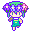

Omori est un RPG tour par tour, mais qui est aussi un jeu narratif : le joueur fait des choix qui ont un impact sur l'histoire et la fin.
Je fais ce petit guide pour aider à obtenir toutes les fins, mais sans aller sur des sites qui pourraient tout vous spoiler !
Je conseille vraiment de ne pas lire d'autres guides. Normalement si vous ne fuyez pas les combats, que vous achetez et utilisez des objets et que vous utilisez intelligemment les personnages, y’a pas besoin de farm pour finir le jeu.
Si vraiment c’est la galère face à un boss, prenez quelques niveaux contre les monstres et ça devrait le faire !
Petite remarque : on peut changer l’équipement des personnages et leurs capacités.
Chaque personnage à 4 emplacements de capacité et on peut mettre celles qu'on veut.
On débloque les capacités en montant de niveau, donc allez régulièrement voir vos personnages.
Jouez avec les émotions, de votre équipe et des ennemis, essayez de trouver des combos intéressants avec vos capacités/objets et utilisez bien vos “follow-up”.
Il y a deux versions distinctes d’Omori : la version steam et la version non-steam.
| Différences entre les versions | ||
|---|---|---|
| / | Steam | Non-Steam |
| Disponibilité : | Windows et Mac, à acheter sur le magasin en ligne Steam | Consoles, Windows si acheté sur le site XBOX |
| Sortie : | 2020 | 2022 |
| Support des mods et patchs : | Oui | Non |
| Ajouts et nouveautés : | Non | Oui |
| Version française: | Oui avec un patch qui s'installe en deux minutes | A priori que sur la version XBOX. Pas sur switch (j'ai pas de Playstation pour vérifier) |
| Prix sur les magasins en ligne (en février 2023, hors promo) : | 16.79€ | Windows/XBOX : 29.99€ ou dans le gamepass (9.99€/mois) PS4 : 29.99€ Switch : 24.99€ |
Le jeu est sorti d’abord sur PC (steam) puis sur consoles (Nintendo Switch, PS4 (compatible PS5), et XBOX (compatible windows 10 et 11).
Les versions consoles ont quelques ajouts.
Ces ajouts sont disponibles sur PC à condition d’acheter le jeu sur le site XBOX (elle est identique à la version console XBOX) mais pas dans la version vendue sur Steam. Par contre, la version steam supporte les mods, dont un patch VF.
En résumé, si vous parlez anglais prenez la version non-steam. Si vous voulez jouer en français, la version team reste la meilleure.
Omori a deux “routes” (branches d'histoire) différentes.
Pour simplifier, je vais les appeler la “normale” et la “hikikomori”.
Il est conseillé par à peu près tout le monde de faire la route normale en premier.
La route hikikomori est une bonne raison de recommencer le jeu puisqu’elle apporte plusieurs zones inédites.
Pour choisir l’une ou l’autre, il suffit de suivre un seul choix : quand la porte toque chez le personnage, si on ouvre la porte, on est sur la route normale. Si on ignore la porte, on part sur la route hikikomori.
La porte est toquée plusieurs fois dans l'histoire et on peut théoriquement “changer” de route, mais ça n’a pas grand intérêt et ça rend le scénario un peu confus, donc je conseille de toujours l’ouvrir ou de toujours l’ignorer selon la route que vous souhaitez faire !
Astuce : Pour la route normale, arrosez les fleurs de Basil TOUS LES JOURS dès que vous débloquerez cette option (faites-moi confiance )
Omori possède 3 fins (en réalité un peu plus si on compte les petites variantes). Une bonne, une mauvaise, et une neutre.
Les 3 fins sont obtenables dans la route normale. La route hikikomori ne permet d’obtenir que l’une des fins.
J’ai essayé d'écrire de manière à spoiler le moins possible, mais pour je vous conseille de ne pas les lire avant d’avoir obtenu au moins une fin par vous-même !
Je recommande aussi de faire des sauvegardes régulières dès que vous arrivez dans l’acte “One Day Left” du scénario (c’est marqué sur les fichiers de sauvegarde)
Faites-les sur plusieurs fichiers de sauvegarde différents pour être sûr de pouvoir faire les autres fins sans repartir trop en arrière.
Quand vous allez dormir chez Basil avec les autres, n’allez pas le voir dans sa chambre et allez vous coucher (sur le canapé chez Basil ou bien chez vous).
Quand vous allez dormir chez Basil avec les autres, n’allez pas le voir dans sa chambre et rentrez chez vous.
Allez dans la cuisine et ramassez le couteau, puis allez dormir dans votre lit.
Quand vous allez dormir chez Basil avec les autres, allez voir Basil dans sa chambre.
L'histoire continue un peu et on arrive au boss final.
Le combat est dur mais continuez jusqu’à atteindre sa phase finale.
Vous devriez vous prendre un game over (c’est scripté).
Choisissez de continuer le combat (YES sur l’écran de game over) et vous tomberez sur la bonne fin.
Si vous avez bien arrosé les fleurs de Basil tous les jours, alors une petite scène bonus est ajoutée à la bonne fin. (fin "secrète")
Quand vous allez dormir chez Basil avec les autres, allez voir Basil dans sa chambre.
L'histoire continue un peu et on arrive au boss final.
Vous devriez perdre contre lui (c’est scripté) puis tomber sur un écran de game over.
Le jeu vous demande si vous voulez réessayer, choisissez NON, et la mauvaise fin se lance.
Arrivé à l'acte “One Day Left”, faites les tâches de la TO-DO list et allez vous coucher.
Vous retournerez alors dans le Headspace (le "monde des rêves") et vous pourrez aller visiter les zones exclusives à cette route.
Quand vous jugez avoir tout fini/que vous en avez marre, il suffit de retourner dans le White Space et de choisir l’option STAB dans le menu pour finir le jeu.
Vous retournerez alors dans le monde réel et vous pourrez faire soit la première fin neutre (aller dormir), soit vous suicider en choisissant l’option STAB dans le menu, qui ressemble à la deuxième fin neutre.